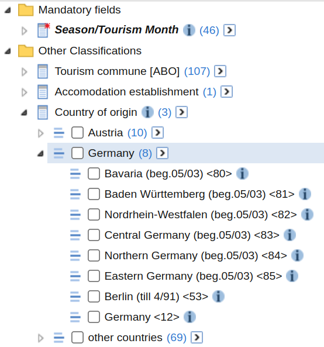

The function sc_table_custom() allows you to define
requests against the /table endpoint programatically. This
can be useful to automate the generation of /table request
rather than relying on the GUI to do so. The function accepts the three
arguments.
- A database id
- ids of measures to be imported (type
MEASUREorSTAT_FUNCTION) - ids of fields to be imported (type
FIELDorVALUESET)
Starting Simple
First, we want to just send a database id to
sc_table_custom(). We will use a database
about accomodation througout this article. This returns a table with
one single row.
database <- "str:database:detouextregsai"
x <- sc_table_custom(database)
x$tabulate()# A STATcubeR tibble: 1 x 2
`Season/Tourism Month` `Nights spent`
* <date> <dbl>
1 2022-06-01 37162704we see that 37 162 704 nights were spent in austrian tourism establishments in the month of 2022-06-01.
Adding Countries
Now we want to add a classification to the table. This can be done by getting the database schema and showing all classification fields.
(fields <- sc_schema_db(database) %>% sc_schema_flatten("FIELD"))# A data frame: 4 × 2
id label
<chr> <chr>
1 str:field:detouextregsai:F-DATA1:C-SDB_TIT-0 Season/Tourism Month
2 str:field:detouextregsai:F-DATA:C-GEMREG-0 Tourism commune [ABO]
3 str:field:detouextregsai:F-DATA:C-BBTR_REG-0 Accomodation establishment
4 str:field:detouextregsai:F-DATA1:C-C93-2 Country of origin If we want to add “Country of origin” we need to include the fouth
entry of the id column in our request.
x <- sc_table_custom(database, dimensions = fields$id[4])
x$tabulate()# A STATcubeR tibble: 3 x 3
`Season/Tourism Month` `Country of origin` `Nights spent`
* <date> <fct> <dbl>
1 2022-06-01 Austria 12235755
2 2022-06-01 Germany 14343746
3 2022-06-01 other countries 10583203Adding Tourism Communes
The dimensions parameter in
sc_schema_custom() accepts vectors of field ids. Therefore,
we can add the communes easily.
x <- sc_table_custom(database, dimensions = fields$id[c(2, 4)])
x$tabulate()# A STATcubeR tibble: 321 x 4
`Season/Tourism Month` `Tourism commune [ABO]` Country of or…¹ Night…²
* <date> <fct> <fct> <dbl>
1 2022-06-01 Achensee Austria 49275
2 2022-06-01 Achensee Germany 371475
3 2022-06-01 Achensee other countries 100131
4 2022-06-01 Alpbachtal und Tiroler Seenla… Austria 30257
5 2022-06-01 Alpbachtal und Tiroler Seenla… Germany 147238
6 2022-06-01 Alpbachtal und Tiroler Seenla… other countries 78072
7 2022-06-01 Alpenregion Bludenz Austria 24161
8 2022-06-01 Alpenregion Bludenz Germany 124078
9 2022-06-01 Alpenregion Bludenz other countries 94838
10 2022-06-01 Arlberg Austria 11122
# … with 311 more rows, and abbreviated variable names ¹`Country of origin`,
# ²`Nights spent`Add Another Measure
Currently, the table only returns the default measure for the database which is the number of nights spent. We can add a second measure by again using the database schema and passing a measure id
(measures <- sc_schema_db(database) %>% sc_schema_flatten("MEASURE"))# A data frame: 2 × 2
id label
<chr> <chr>
1 str:measure:detouextregsai:F-DATA1:F-ANK Arrivals
2 str:measure:detouextregsai:F-DATA1:F-UEB Nights spentWe can add both measures to the request by using
measures$id. Just like the dimensions
parameter, the measures parameters accepts vectors of
resource ids.
x <- sc_table_custom(database, measures = measures$id,
dimensions = fields$id[c(2, 4)])
x$tabulate()# A STATcubeR tibble: 321 x 5
Season/Touri…¹ `Tourism commune [ABO]` Country of or…² Arriv…³ Night…⁴
* <date> <fct> <fct> <dbl> <dbl>
1 2022-06-01 Achensee Austria 16835 49275
2 2022-06-01 Achensee Germany 100856 371475
3 2022-06-01 Achensee other countries 27409 100131
4 2022-06-01 Alpbachtal und Tiroler Seenla… Austria 10846 30257
5 2022-06-01 Alpbachtal und Tiroler Seenla… Germany 35436 147238
6 2022-06-01 Alpbachtal und Tiroler Seenla… other countries 18959 78072
7 2022-06-01 Alpenregion Bludenz Austria 10462 24161
8 2022-06-01 Alpenregion Bludenz Germany 36567 124078
9 2022-06-01 Alpenregion Bludenz other countries 24898 94838
10 2022-06-01 Arlberg Austria 4593 11122
# … with 311 more rows, and abbreviated variable names ¹`Season/Tourism Month`,
# ²`Country of origin`, ³Arrivals, ⁴`Nights spent`Using Valuesets
We can see in the GUI that “Country of origin” is a hierarchical classification. If we look at the table above, only the top level of the hierarchy (Austria, Germany, other) is used. This can be changed by providing the the valueset that corresponds to the more granular classification of “country of origin”

The different valuesets for “country of origin” can be compared by browsing the database schema.
db_schema <- sc_schema_db(database)
db_schema$`Other Classifications`$`Country of origin`FIELD: Country of origin
# A data frame: 2 × 3
child type n_childs
<chr> <chr> <int>
1 Country of origin VALUESET 87
2 Herkunftsland (Ebene +1) VALUESET 3We can see that the two levels of the hierarchy are represented by the two valuesets. The valueset “Herkunftsland” uses 3 classification elements and represents the top level of the hierarchy (Austria, Germany, Other). The valueset “Country of origin” uses 87 (10+8+69) classification elements and is the bottom level of the hierarchy. For classification with more levels of hierarchies, more valuesets will be present.
We will now use the id for the first valueset in the
dimensions parmaeter of sc_table_custom.
id_valueset <- db_schema$`Other Classifications`$
`Country of origin`$`Country of origin`$id
x <- sc_table_custom(
db = "str:database:detouextregsai",
measures = measures$id[1:2],
dimensions = id_valueset
)
x$tabulate()# A STATcubeR tibble: 87 x 4
`Season/Tourism Month` `Country of origin` Arriv…¹ Night…²
* <date> <fct> <dbl> <dbl>
1 2022-06-01 Vienna <01> 886417 2644207
2 2022-06-01 Burgenland (beg.05/03) <70> 208706 537523
3 2022-06-01 Carinthia (beg.05/03) <71> 231186 697365
4 2022-06-01 Lower Austria (beg.05/03) <72> 827314 2483974
5 2022-06-01 Upper Austria (beg.05/03) <73> 747303 1997340
6 2022-06-01 Salzburg (beg.05/03) <74> 307547 808860
7 2022-06-01 Styria (beg.05/03) <75> 622698 1793778
8 2022-06-01 Tyrol (beg.05/03) <76> 314377 828831
9 2022-06-01 Vorarlberg (beg.05/03) <77> 168320 443877
10 2022-06-01 Austria except Vienna (till 04/03) <0… NA NA
# … with 77 more rows, and abbreviated variable names ¹Arrivals,
# ²`Nights spent`It is possible to use a mixture of valuesets and fields in the
dimensions parameter.
Filtering Data
Omitting certain classification elements from the query is possible
with the recodes parameter of the /table
endpoint. Currently, sc_table_custom() does not provide
support for recodes. Please issue a feature
request if you see this as a useful extension of
STATcubeR.